화학분석기사(구) (2019-09-21 기출문제)
1과목: 일반화학
1. 주어진 온도에서 N2O4(g) ⇄ 2NO2(g)의 계가 평형상태에 있다. 이때 계의 압력을 증가시킬 때 반응의 변화로 옳은 것은?
- 정반응과 역반응의 속도가 함께 빨라져서 변함없다.
- 평형이 깨어지므로 반응이 멈춘다.
- 정반응으로 진행된다.
- 역반응으로 진행된다.
(정답률: 92%)

2. 2.5g의 살리실산가 3.1g의 아세트산 무수물을 반응시켰더니, 3.0g의 아스피린을 얻을 수있었다. 아스피린의 이론적 수득량은 약 몇 g 인가? (단, 살리실산의 분자량 : 138.12g/mol, 아세트산무수물의 분자량 : 102.09g/mol, 아스피린의 분자량 : 180.16g/mol 이고, 살리실산과 아세트산무수물은 1:1로 반응하고 반응에서 역반응은 일어나지 않았다고 가정한다.)
- 2.6
- 2.8
- 3.0
- 3.2
(정답률: 73%)
3. 수소 연료전지에서 전기를 생산할 때의 반응식이 다음과 같을 때 10g의 H2와 160g의 O2가 반응하여 생성된 물은 몇 g 인가?
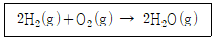
- 90
- 100
- 110
- 120
(정답률: 90%)
4. 다음 단위체 중 첨가 중합체를 만드는 것은?
- C2H6
- C2H4
- HOCH2CH2OH
- HOCH2CH3
(정답률: 87%)
5. 납 원자 2.55×1023개의 질량은 약 몇 g인가? (단,납의 원자량은 207.2이다.)
- 48.8
- 87.8
- 488.2
- 878.8
(정답률: 87%)
6. 다원자 이온에 대한 명명 중 옳지 않은 것은?
- CH3COO- : 아세트산이온
- NO3- : 질산이온
- SO32- : 황산이온
- HCO3- : 탄산수소이온
(정답률: 81%)
7. 카르보닐(corbonyl)기를 가지고 있지 않은 것은?
- 알데히드
- 아미드
- 에스테르
- 페놀
(정답률: 64%)
8. 부탄이 공기 중에서 완전 연소하는 화학반응식은 다음과 같다. ( ) 안에 들어갈 계수들 중 a의 값은 얼마인가?
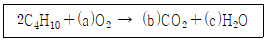
- 10
- 11
- 12
- 13
(정답률: 91%)
9. 일반적인 화학적 성질에 대한 설명 중 틀린 것은?
- 열역학적 개념 중 엔트로피는 특정 물질을 이루고 있는 입자의 무질서한 운동을 나타내는 특성이다.
- Albert Eimstein 이 발견한 현상으로, 빛을 금속 표면에 쪼였을 때 전자가 방출되는 현상을 광전효과라 한다.
- 기체 상태의 원자에 전자 하나를 더하는 데 필요한 에너지를 이온화 에너지라 한다.
- 같은 주기에서 원자의 반지름은 원자번호가 증가할수록 감소한다.
(정답률: 86%)
10. H2C2O4에서 C의 산화수는?
- +1
- +2
- +3
- +4
(정답률: 90%)
11. 용액의 농도에 대한 설명이 잘못된 것은?
- 노르말농도는 용액 1L에 포함된 용질의 그램 당량수로 정의한다.
- 몰분율은 그 성분의 몰수를 모든 성분의 전체 몰수로 나눈 것으로 정의한다.
- 몰농도는 용액 1L에 포함된 용질의 양을 몰수로 정의한다.
- 몰랑농도는 용액 1kg에 포함된 용질의 양을 몰수로 정의한다.
(정답률: 86%)
12. 산성비의 발생과 가장 관계가 없는 반응은?
- Ca2+(aq)+ CO32-(aq) → CaCO3(s)
- S(s) + O2(g) →SO2(g)
- N2(g) + O2(g) → 2NO(g)
- SO3(g) + H2O(L) → H2SO4(aq)
(정답률: 89%)
13. 다음 산의 명명법으로 옳은 것은?
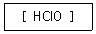
- 염소산
- 아염소산
- 과염소산
- 하이포아염소산
(정답률: 76%)
14. 어떤 과일 주스의 pH가 4.7이다. 용액의 OH- 이온 농도는 몇 mol/L 인가?
- 104.7
- 10-4.7
- 109.3
- 10-9.3
(정답률: 87%)
15. 특정 온도에서 기체 혼합물의 평형농도는 H2 0.13M, I2 0.70M, HI2.1M이다. 같은 온도에서 500.00mL 빈 용기에 0.20 mol의 HI를 주입하여 평형에 도달하였다면 평형 혼합물 속의 HI의 농도는 몇 M 인가?
- 0.045
- 0.090
- 0.31
- 0.52
(정답률: 39%)
16. 돌턴(Dalton)의 원자설에서 설명한 내용이 아닌 것은?
- 물질은 더 이상 나눌 수 없는 원자로 이루어져 있다.
- 원자가전수의 수는 화학결합에서 중요한 역할을 한다.
- 같은 원소의 원자들은 질량이 동일하다.
- 서로 다른 원소의 원자들이 간단한 정수비로 결합하여 화합물을 만든다.
(정답률: 77%)
17. 다음 화학종 가운데 증류수에서 용해도가 가장 큰 화학종은 무엇인가? (단, 각 화학종의 용해도곱상수는 괄호 안의 값으로 가정한다.)
- AgCl (10-10)
- AgI (10-16)
- Ni(OH)2 (6×10-16)
- Fe(OH)3 (2×10-39)
(정답률: 81%)
18. 0.1M H2SO4 수용액 10mL에 0.⑤M NaOH 수용액 10ml를 혼합하였다. 혼합 용액의 pH는? (단, 황산은 100% 이온화되며 혼합 용액의 부피는 20ml 이다.)
- 0.875
- 1.125
- 1.25
- 1.375
(정답률: 59%)
19. 1.20g의 유황(S)을 15.00g의 나프탈렌에 녹였더니 그 용액의 녹는점이 77.88℃이었다. 이 유황의 분자량(g/mol)은? (단, 나프탈렌의 녹는점은 80.00℃이고, 나프탈렌의 녹는점 강하상수(Kf)는 –6.80℃/m 이다.)
- 82
- 118
- 258
- 560
(정답률: 57%)
20. 주기율표에 대한 설명 중 옳지않은 것은?
- 주기율표란 원자번호가 증가하는 순서로 원소들을 배열하여 화학적 유사성을 한눈에 볼 수 있도록 만든 표이다.
- 주기율표를 이용하면 화학정보를 체계적으로 분류, 해석, 예측할 수 있다.
- 원소를 족(group)과 주기(period)에 따라 배열하고 있다.
- 전이금속원소는 10개로 나뉘어져 있으며, 원자번호 51~71번을 악티늄족이라 부른다.
(정답률: 92%)
2과목: 분석화학
21. EDTA 적정에서 역적정에 대한 설명으로 틀린 것은?
- 역적정에서는 일정한 소량의 EDTA를 분석용액에 가한다.
- EDTA를 제2의 금속 이온 표준용액으로 적정한다.
- 역적정법은 분석물질이 EDTA를 가하기 전에 침전물을 형성하거나, 적정 조건에서 EDTA와 너무 천천히 반응하거나, 혹은 지시약을 막는 경우에 사용한다.
- 역적정에서 사용되는 제2의 금속 이온은 분석물질의 금속 이온을 EDTA 착물로부터 치환시켜서는 안 된다.
(정답률: 53%)
22. 0.⑤M Na2SO4 용액의 이온세기는?
- 0.⑤M
- 0.10M
- 0.15M
- 0.20M
(정답률: 79%)
23. 침전과정에서 결정성장에 관한 설명으로 틀린 것은?
- 침전물의 입자크기를 증가시키기 위하여 침전물이 생성되는 동안에 상대 과포화도를 최소화하여야 한다.
- 핵심 생성(nucleation)이 지배적이라면 침전물은 매우 작은 입자로 구성된다.
- 입자 성장(particle growth)이 지배적이면 침전물은 큰 입자들로 구성한다.
- 핵심 생성(nucleation) 속도는 상대 과포화도가 감소함에 따라 직선적으로 증가한다.
(정답률: 72%)
24. 그림과 같이 다이싸이올알케인의 전도도는 사슬의 길이가 길어질수록 기하급수적으로 감소하는데 그 이유는 무엇인가?
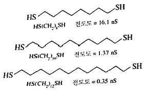
- 저항이 증가하기 때문에
- 저항이 감소하기 때문에
- 전압이 증가하기 때문에
- 전압이 감소하기 때문에
(정답률: 89%)
25. Pb2+는 I-와 반응하여 PbI2 침전을 만들기도 하지만 PbI+,PbI2(aq),PbI3-, PbI42-의 착물을 형성하기도 한다. Pb2+와 I-의 착물 형성상수는 각각 β1 = 1.0×102, β2 = 1.4×103, β3 = 8.3×103, β4 = 3.0×104이고 Ksp(PbI2) = 7.9×10-9일 때, 0.1M의 Pb2+ 수용액에 I-를 1.0×10-4M에서 5M 정도 될 때까지 천천히 첨가할 경우에 대한 설명으로 옳지 않은 것은?
- 침전물의 양은 증가하다가 감소한다.
- 수용액 중 Pb2+의 농도는 계속 감소한다.
- 수용액 중 PbI3-의 농도는 계속 증가한다.
- 수용액 중에 녹아 있는 전체 Pb2+ 농도는 일정하다.
(정답률: 52%)
26. S4O62- 이온에서 황(S)의 산화수는 얼마인가?
- 2
- 2.5
- 3
- 3.5
(정답률: 87%)
27. Mg2+이온과 EDTA와의 착물 MgY2-를 포함하는 수용액에 대한 다음 설명 중 틀린 것은? (단, Y4-는 수소이온을 모두 잃어버린 EDTA의 한 형태이다.)
- Mg2+와 EDTA의 반응은 킬레이트 효과로 설명할 수 있다.
- 용액의 pH를 높일수록 해리된 Mg2+이온의 농도는 감소한다.
- 해리된 Mg2+이온의 농도와 Y4-의 농도는 서로 같다.
- EDTA는 산-염기 화합물이다.
(정답률: 75%)
28. 다음 식 HOCl ⇌ H+ + OCl-은 K1 = 3.0×10-8, HOCl + OBr- ⇌ HOBr + OCl-은 K2 = 15로부터 반응 HOBr ⇌ H+ + OBr-에 대한 K값은?
- 2.0×10-9
- 4.0×10-9
- 2.0×10-8
- 4.0×10-8
(정답률: 68%)
29. 난용성 염 포화용액 성분의 My+와 Ax-를 포함하는 용액에서 두 이온의 농도 곱을 용해도곱(solubility product; Ksp)이라고 한다. 이 값은 온도가 일정하면 항상 일정한 값을 갖는다. 이 때 [My+]x와 [Ax-]y의 곱이 Ksp보다 클 때 용액에서 나타나는 현상은?
- 농도곱이 Ksp와 같아질 때까지 침전한다.
- 농도곱이 Ksp와 같아질 때까지 용해된다.
- Ksp와 무관하게 항상 용해되어 침전하지 않는다.
- 반응 종료 후 용액의 상태는 포화이므로 침전하지 않는다.
(정답률: 75%)
30. 다음의 전기화학전지를 선 표시법으로 옳게 표시한 것은?
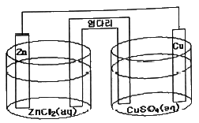
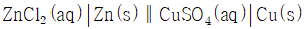
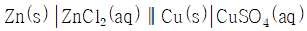
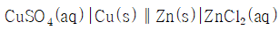
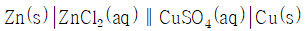
(정답률: 86%)
31. HgS는 산성과 알칼리성 H2S 용액 모두에서 침전되고, ZnS는 알칼리성 H2S 용액에서만 침전된다. 이로부터 알 수 있는 HgS와 ZnS의 용해도곱 상수의 크기는?
- HgS가 더 작다.
- ZnS가 더 작다.
- 같다.
- 알 수 없다.
(정답률: 62%)
32. pKa = 7.00인 산 HA가 있을 때 pH 6.00에서
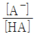
의 값은?- 1
- 0.1
- 0.01
- 0.001
(정답률: 84%)
33. 완충용액에 적용되는 Henderson-Hasselbalch equation(헨더슨-하셀바흐식)은?
- pH = -pKa + log([A-]/[HA])
- pH = pKa + log([A-]/[HA])
- pH = pKa - log([A-]/[HA])
- pH = -pKa - log([A-]/[HA])
(정답률: 86%)
34. 이온선택성 전극(ion selective electrode)에 대한 설명으로 틀린 것은?
- 복합전극(compound electrode)에서는 은-염화은 전극을 기준전극으로 사용할 수 있다.
- 복합전극 용액 중에 함유된 CO2, NH3 등의 기체의 농도를 측정하는데 사용될 수 있다.
- 고체상(solid state) 이온선택성 전극에서 전극내부의 충전용액은 분석하고자 하는 이온이 함유되어 있다.
- 고체상 이온선택성 전극의 이온 감지부분(membrane crystal)은 분석하고자 하는 이온만을 함유한 순수한 고체결정을 사용해야 한다.
(정답률: 62%)
35. 농도가 19.5%로 표시되어 있는 술의 에탄올 농도는? (단, 농도는 부피비로 나타내었다고 가정하고, 물의 밀도는 1.00g/mL 이고, 에탄올의 밀도는 0.789g/mL 이며, 에탄올의 분자량은 46.0g/mol 라고 가정한다.)
- 3.34M
- 4.10M
- 4.24M
- 7.08M
(정답률: 67%)
36. 염(salt) 용액에서 활동도(activity)의 설명으로 옳은 것은?
- 이온의 활동도는 활동도계수의 제곱에 반비례한다.
- 이온의 활동도는 활동도계수에 비례한다.
- 이온의 활동도는 활동도계수에 반비례한다.
- 이온의 활동도는 활동도계수의 제곱에 비례한다.
(정답률: 76%)
37. 이산화염소의 산화반응에 대한 화학 반응식에서 ( ) 안에 적합한 화학반응 계수를 차례대로 옳게 나타낸 것은?
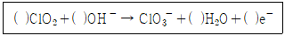
- 1, 1, 1, 1
- 1, 2, 1, 1
- 2, 2, 2, 1
- 1, 2, 1, 2
(정답률: 88%)
38. 2003년 발생하여 우리나라에 막대한 피해를 입힌 태풍 매미의 중심기압은 910hPa이었다. 이를 토르(torr) 단위로 환산하면? (단, 1 atm = 101325 Pa, 1torr = 133.322 Pa 이다.)
- 643
- 683
- 743
- 763
(정답률: 80%)
39. 20℃에서 빈 플라스크의 질량은 10.2634g이고, 증류수로 플라스크를 완전히 채운 후의 질량은 20.2144g 이었다. 20℃에서 물 1g의 부피가 1.0029 mL일 때, 이 플라스크의 부피를 나타내는 식은?
- (20.2144 – 10.2634) × 1.0029
- (20.2144 – 10.2634) ÷ 1.0029
- 1.0029 + (20.2144 – 10.2634)
- 1.0029 ÷ (20.2144 – 10.2634)
(정답률: 85%)
40. 0.⑤0 M Fe2+ 100.0mL를 0.100 M Ce4+로 산화환원 적정한다고 가정하자.
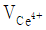
= 50.0mL일 때 당량점에 도달한다면 36.0mL를 가했을 때의 전지 전압은? (단,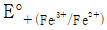
= 0.767 V,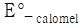
= 0.241 V)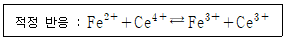
- 0.526 V
- 0.550 V
- 0.626 V
- 0.650 V
(정답률: 44%)
3과목: 기기분석I
41. 복사선의 파장보다 대단히 작은 분자나 분자의 집합체에 의하여 탄성 산란되는 현상을 무엇이라 하는가?
- Stoke 산란
- Raman 산란
- Rayleigh 산란
- Anti-Stoke 산란
(정답률: 71%)
42. 단색 X-선 빛살의 광자가 K-껍질 및 L-껍질의 내부전자를 방출시켜 방출된 전자의 운동에너지를 측정하여 시료원자의 산화 상태와 결합 상태에 대한 정보를 동시에 얻을 수 있는 전자 분광법은?
- Auger 전자분광법(AES)
- X-선 광전자분광법(XPS)
- 전자에너지 손실 분광법(EELS)
- 레이저마이크로탐침 질량분석법(LMMS)
(정답률: 71%)
43. CH3CH2CH2OCH3 분자는 핵자기공명(NMR) 스펙트럼에서 몇 가지의 다른 화학적 환경을 가지는 수소가 존재하는가?
- 1
- 2
- 3
- 4
(정답률: 79%)
44. 일반적으로 신호-대-잡음비가 얼마 이하일 때 신호를 사람의 눈으로 관찰이 불가능해지는가?
- 1
- 3
- 5
- 10
(정답률: 63%)
45. 복사선을 흡수하면 에너지 준위 사이에서 전자 전이가 일어나게 되는데 다음 전이 중 파장이 가장 짧은 복사선을 흡수하는 전자전이는?
- σ → σ*
- π → π*
- n → σ*
- n → π*
(정답률: 63%)
46. UV/VIS을 이용하여 미지의 샘플을 10mm 용기(cell)를 이용하여 흡광도를 측정했을 때, 흡광도가 0.1이면 같은 샘플을 50mm 용기(cell)로 측정했다면 흡광도 값은?
- 0.2
- 0.5
- 1.0
- 1.5
(정답률: 84%)
47. NMR 기기를 이루는 중요한 4가지 구성에 해당하지 않는 것은?
- 균일하고 센 자기장을 갖는 자석
- 대단히 작은 범위에 자기장을 연속적으로 변화할 수 있는 장치
- 라디오파(RF) 발신기
- 전파 송신기
(정답률: 66%)
48. 분자의 들뜬 상태(excited state)에 대한 설명으로 틀린 것은?
- 적외선이 분자의 진동을 유발한 상태
- X-선이 분자를 이온화시킨 상태
- 분자가 마이크로파의 복사선을 흡수한 상태
- 분자가 광자를 방출하여 주변의 에너지 준위가 높아진 상태
(정답률: 57%)
49. 나트륨(Na) 기체의 전형적인 원자 흡수스펙트럼을 옳게 나타낸 것은?
- 선(line) 스펙트럼
- 띠(bond) 스펙트럼
- 선과 띠의 혼합 스펙트럼
- 연속(continuous) 스펙트럼
(정답률: 78%)
50. 유도결합플라스마(ICP) 원자방출 분광법이 원자흡수분광법과 비교하여 가지는 장점에 대한 설명으로 틀린 것은?
- 동시에 여러 가지 원소들을 분석할 수 있다.
- 낮은 온도에서 분석을 수행하므로 원소간의 방해가 적다.
- 일반적으로 더 낮은 농도까지 측정할 수 있다.
- 잘 분해되지 않는 산화물들의 분석이 가능하다.
(정답률: 71%)
51. 이산화탄소 분자는 모두 몇 개의 기준 진동방식을 가지는가?
- 3
- 4
- 5
- 6
(정답률: 72%)
52. 원자화 온도가 가장 높은 원자분광법의 원자화 장치는?
- 전열증발화(ETV)
- 마이크로-유도 아르곤 플라스마(MIP)
- 불꽃(Flame)
- 유도쌍 아르곤 플라스마(ICP)
(정답률: 67%)
53. 유도결합플라스마(ICP)를 이용하여 금속을 분석할 경우 이온화 효과에 의한 방해가 발생되지 않는 주된 이유는?
- 시료성분의 이온화 영향
- 아르곤의 이온화 영향
- 시료성분의 산화물 생성 억제효과
- 분석원자의 수명 단축효과
(정답률: 69%)
54. 푸리에(Fourier) 변환을 이용하는 분광법에 대한 설명으로 틀린 것은?
- 기기들이 복사선의 세기를 감소시키는 광학부분장치와 슬릿을 거의 가지고 있지 않기 때문에 검출기에 도달하는 복사선의 세기는 분산기기에서 오는 것보다 더 크게 되므로 신호-대-잡음비가 더 커진다.
- 높은 분해능과 파장 재현성으로 인해 매우 많은 좁은 선들의 겹침으로 해서 개개의 스펙트럼의 특성을 결정하기 어려운 복잡한 스펙트럼을 분석할 수 있게 한다.
- 광원에서 나오는 모든 성분 파장들이 검출기에 동시에 도달하기 때문에 전체 스펙트럼을 짧은 시간 내에 얻을 수 있다.
- 푸리에 변환에 사용되는 간섭계는 미광(stray light)의 영항을 받으므로 시간에 따른 미광의 영향을 최소화하기 위하여 빠른 감응검출기를 사용한다.
(정답률: 57%)
55. X-선 분광법에 대한 설명으로 틀린 것은?
- 방사성 광원은 X-선 분광법의 광원으로 사용될 수 있다.
- X-선 광원은 연속 스펙트럼과 선스펙트럼을 발생시킨다.
- X-선의 선스펙트럼은 내부 껍질 원자 궤도함수와 관련된 전자 전이로부터 얻어진다.
- X-선의 선스텍트럼은 최외각 원자 궤도함수와 관련된 전자 전이로부터 얻어진다.
(정답률: 62%)
56. Monochromator 의 slit width를 증가시켰을 때 발생하는 현상으로 가장 옳은 것은?
- resolution 이 감소한다.
- peak width가 좁아진다.
- 빛의 세기가 감소한다.
- grating 효율도가 증가한다.
(정답률: 64%)
57. X-선 분석에서 Bragg식은 다음 중 어떤 현상에 대해 나타낸 식인가?
- 회절
- 편광
- 투과
- 복사
(정답률: 81%)
58. 원자분광법에서 액체 시료를 도입하는 장치에 대한 설명으로 틀린 것은?
- 기압식 분무기 : 용액 시료를 준비하여 분무기로 원자화 장치 안으로 불어 넣는다.
- 초음파 분무기 : 20 kHz ~ 수 MHz로 진동하는 소자를 이용한다. 이 소자의 표면에 액체 시료를 주입하면 균일한 에어로졸을 형성시킨 후 이를 원자화 장치안으로 이동시킨다.
- 전열 증기화 장치 : 전기방전이 시료표면에서 상호작용하여 증기화된 입자시료 집합체를 만든 다음 비활성기체의 흐름에 의해 원자화장치로 운반된다.
- 수소화물 생성법 : 휘발성 수소화물을 생성시켜 이용하는 방법으로 NaBH4 수용액을 이용한다. 휘발성이 높아진 시료는 바로 도입이 가능하다.
(정답률: 47%)
59. 아래 표에서 ( ) 안에 알맞은 것은?
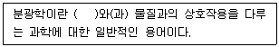
- 원자
- 분자
- 복사선
- 전자
(정답률: 82%)
60. N개의 원자로 이루어진 분자가 적외선(IR)흡수분광법에서 나타내는 진동방식(vibratinal mode)은 선형분자의 경우 3N-5인데, 비선형분자의 경우 3N-6이다. 이렇게 차이가 나는 주된 이유는?
- 선형분자의 경우 자신의 축을 중심으로 회전하는 운동에서 위치 변화가 없기 때문에
- 선형분자의 경우 양끝에서 당기는 운동에 관해서 쌍극자의 변화가 없기 때문에
- 선형분자의 경우 원자들이 동일한 방향으로 병진 운동하기 때문에
- 선형분자의 경우 에너지 준위 사이의 차이가 작기 때문에
(정답률: 57%)
4과목: 기기분석II
61. 전위차법에서 이온선택성 막의 성질로 인해 어떤 양이온이나 음이온에 대한 막전극들의 감도와 선택성을 나타낸다. 이 성질에 해당하지 않는 것은?
- 최소 용해도
- 전기전도도
- 산화·환원 반응
- 분석물에 대한 선택적 반응성
(정답률: 54%)
62. 불꽃이온화검출기(FID)에 대한 설명으로 틀린 것은?
- 버너를 가지고 있다.
- 사용 가스는 질소와 공기이다.
- 불꽃을 통해 전기를 운반할 수 있는 전자와 이온을 만든다.
- 유기화합물은 이온성 중간체가 된다.
(정답률: 70%)
63. 상온에서 다음 전극계의 전극전위는 약 얼마인가? (단, 각 이온의 농도는 Cr3+ = 2.00×10-4M, Cr2+ = 1.00×10-3M, Pb2+ = 6.50×10-2M 이다.)
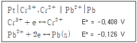
- -0.255V
- -0.288V
- 0.255V
- 0.288V
(정답률: 44%)
64. 크로마토그래피에서 봉우리 넓힘에 기여하는 요인에 대한 설명으로 틀린 것은?
- 충전입자의 크기는 다중 통로 넓힘에 영향을 준다.
- 이동상에서의 확산계수가 증가할수록 봉우리 넓힘이 증가한다.
- 세로확산은 이동상의 속도에 비례한다.
- 충전입자의 크기는 질량이동계수에 영향을 미친다.
(정답률: 74%)
65. 기체 크로마토그래피 분리법에 사용되는 운반기체로 부적당한 것은?
- He
- N2
- Ar
- Cl2
(정답률: 80%)
66. 액체 크로마토그래피에서 보기에서 설명하는 검출기는?
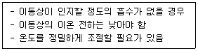
- 전기전도도 검출기
- 형광 검출기
- 굴절률 검출기
- UV 검출기
(정답률: 49%)
67. 미셀 동전기 모세관 크로마토그래피에 대한 설명으로 틀린 것은?
- HPLC 보다 관효율이 높다.
- 키랄 화합물을 분맇는데 유용하다.
- 겔 전기 이동으로 분리할 수 없는 작은 분자를 분리하는데 유용하다.
- 고압 펌프를 사용하여 전하를 띠지 않는 화학종을 분리할 수 있다.
(정답률: 47%)
68. 0.010M Cd2+ 용액에 담겨진 카드뮴 전극의 반쪽전지의 전위를 계산하면? (단, 온도는 25℃이고 Cd2+/Cd 의 표준환원 전위는 –0.403V 이다.)
- -0.402V
- -0.462V
- -0.503V
- -0.563V
(정답률: 70%)
69. 분광질량분광법의 이온화 방법 중 사용하기 편리하고 이온전류를 발생시키므로 매우 예민한 방법이지만 열적으로 불안정하고 분자량이 큰 바이오 물질들의 이온화원에는 부적당한 방법은?
- Electron Impact(EI)
- Electro Spray Ionization(ESI)
- Fast Atom Bombardment(FAB)
- Matrix-Assisted Laser Desorption Ioization(MALDI)
(정답률: 62%)
70. 자기장부채꼴 질량분석기의 구성이 아닌 것은?
- 슬릿
- 펌프
- 거울
- 필라멘트
(정답률: 49%)
71. 작용기를 가지는 화합물은 하나 이상의 전압전류를 생성시킬 수 있다. 이런 활성 작용기에 해당하지 않는 것은?
- 카르보닐기
- 대부분의 유기 할로젠기
- 암모니아 화합물
- 탄소-탄소 이중결합
(정답률: 56%)
72. GC의 열린관 컬럼 중 유연성이 우수하고 화학적으로 비활성이며, 분리 효율이 아주 우수한 컬럼은?
- 벽도포 열린관 컬럼(WCOT)
- 용융실리카 벽도포 열린관 컬럼(FSWT)
- 지지체도포 열린관 컬럼(SCOT)
- megabore 컬럼
(정답률: 76%)
73. HPLC에서 분배 크로마토그래피에 응용에 대한 설명으로 옳은 것은?
- 역상 충진(reversed-phase packings) 칼럼을 사용하고 극성이 큰 이동상으로 용리하면 극성이 작은 용질이 먼저 용리되어 나온다.
- 정상 결합상 충전물(normal-phase bonded packings)에서 실옥산(siloxane) 구조에 있는 R은 비극성 작용기가 일반적이다.
- 이온쌍 크로마토그래피에서는 정지상에 큰 유기 상대이온을 포함하는 유기 염을 결합시켜 분리 용질과의 이온쌍 형성에 기초하여 분리한다.
- 거울상을 가지는 키랄 화합물(ciral compounds)의 분리를 위해 키랄 크로마토그래피가 응용되는데 키랄 이동상 첨가제나 키랄 정지상을 사용하여 분리한다.
(정답률: 54%)
74. 전기화학전지에 대한 설명으로 틀린 것은?
- 산화전극과 환원전극이 외부에서 금속전도체로 연결된다.
- 두 개의 전해질 용액은 이온을 한쪽에서 다른 쪽으로 이동할 수 있게 간접적으로 접촉된다.
- 두 개의 전극 각각에서 전자이동 반응이 일어난다.
- 용액 사이의 간접적 접촉을 통하여 산화반응에 의해 주어지는 전자가 환원반응이 일어나는 용액으로 이동한다.
(정답률: 50%)
75. 질량분석법은 여러 가지 성분의 시료를 기체상태로 이온화한 다음 자기장 혹은 전기장을 통해 각 이온을 질량/전하의 비에 따라 분리하여 질량스펙트럼을 얻는 방법이다. 질량분석기의 기기장치 중 진공으로 유지되어야 하는 부분이 아닌 것은?
- 도입계
- 이온원
- 검출기
- 신호처리기
(정답률: 72%)
76. 중합체를 분석하는 시차주사 열량법(DSC)에 대한 설명으로 틀린 것은?
- 시료와 기준물질 간의 온도 차이를 측정한다.
- 결정화 온도(Tc)는 발열 봉우리로 나타난다.
- 유리전이 온도(Tg) 전후에은 열흐름(heat flow)의 변화가 생긴다.
- 결정화 온도(Tc)는 유리전이 온도(Tg)와 녹는점 온도(Tm)사이에 위치한다.
(정답률: 63%)
77. 질량 분석법에서는 질량-대-전하의 비에 의하여 원자 또는 분자 이온을 분리하는데 고진공 속에서 가속된 이온들을 직류 전압과 RF 전압을 일정속도로 함께 증가시켜주면서 통로를 통과하도록 하여 분리하며 특히 주사시간이 짧은 장점이 있는 질량 분석기는?
- 이중 초점 분석기(double focusing spectrometer)
- 사중극자 질량분석기(quadrupole mass spectrometer)
- 비행시간 분석기(time-of-flight spectrometer)
- 이온-포착분석기(ion-trap spectrometer)
(정답률: 66%)
78. 액체막(liquid membrane) 칼슘 이온선택성 전극을 이용하여 용액의 Ca2+ 농도를 결정하고자 한다. 미지시료 25.0mL 에 칼슘이온 선택성 전극을 담가 전위를 측정하였더니 전위가 497.0mV 이었다. 미지시료에0.⑤00M 농도의 CaCl2 용액 2.00mL를 첨가하여 전위를 측정하였더니 전위가 512.0mV 이었다. 이온선택성전극이 Nernst 식을 따른다면 미지용액에서의 칼슘이온의 농도는?
- 0.00162M
- 0.00428M
- 0.0187M
- 1.124M
(정답률: 32%)
79. 열무게법(TG)에서 전기로르 질소와 아르곤으로 환경기류를 만드는 주된 이유는?
- 시료의 환원 억제
- 시료의 산화 억제
- 시료의 확산 억제
- 시료의 산란 억제
(정답률: 83%)
80. 액체 크로마토그래피에서 극성이 서로 다른 혼합물을 가장 효과적으로 분리하는 방법으로서 기체크로마토그래피에서 온도프로그래밍을 이용하여 얻은 효과와 유사한 효과가 있는 것은?
- 기울기 용리법
- 등용매 용리법
- 온도 기울기법
- 압력 기울기법
(정답률: 82%)